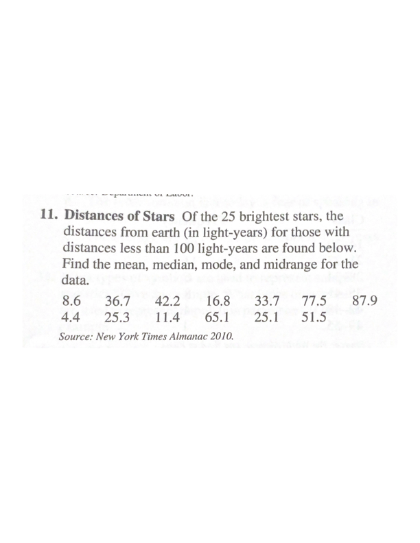
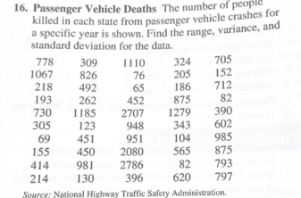

Ejerc_Ten_Central_Disp_Graficos_2022
Raymond_L_Tremblay
2022-09-07
Calcular el promedio, mediana, moda y rango de los datos de las estrellas más cercana a la tierra

Calular los cuantiles mencionado en la pregunta

Calcular el promedio, mediana, moda de los datos de las estrellas más cercana a la tierra

Calcular el rango, varianza, desviación estandard y error estandard
